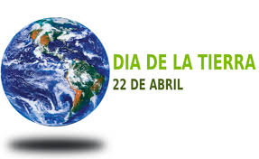
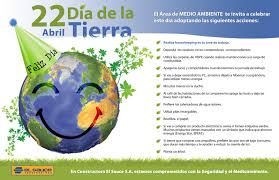

Dia De la Tierra
-
Fecha de Conmemoración
Toca para ver la Información
-
¿Por Qué se celebra?
Toca para ver la Información
-
Cuidados al Planeta
Toca para ver la Información
-
Cambios Climaticos
Toca para ver la Información
- Reducir o eliminar la cantidad de materiales destinados a un uso único (por ejemplo, los embalajes).
- Adaptar los aparatos en función de sus necesidades (por ejemplo poner lavadoras y lavavajillas llenos y no a media carga).
- Reducir pérdidas energéticas o de recursos: de agua, desconexión de aparatos eléctricos en stand by, conducción eficiente, desconectar transformadores, etc.
Reflexión
Tenemos que cambiar el planeta ya que esta muy contaminado y eso afecta tanto a a los seres vivos como al mundo. Hacer unos cambios al planeta no estan dificil como dicen, solo se necesita la voluntad de hacerlo y apoyo a los que deverdad lo quieren hacer.
Para poder hacer el poyo solo se necesita empezar por tu colonia, hacer que los vecinos se unan y empezar a limpiar para que no tenga contaminacion.
Mas adelante puedes hacer campañas para tu comunidad y hacer que todos se unan al apoyo pues lo que haces es algo bueno no solo para ti si no para los demas y lo mas importante para el planeta que como ya sabemos la Tierra es el unico planeta que hay vida
Aplicacion cinco
Jonathan Antonio Rosales Espinoza
Dia de la Tierra
El Día de la Tierra es un día celebrado en muchos países el 22 de abril. Su promotor, el senador estadounidense Gaylord Nelson, instauró este día para crear una conciencia común a los problemas de la superpoblación, la producción de contaminación, la conservación de la biodiversidad y otras preocupaciones ambientales para proteger la Tierra. Es un día para rendir homenaje a nuestro planeta y reconocer a la Tierra como nuestro hogar y nuestra madre, así como lo han expresado distintas culturas a lo largo de la historia, demostrando la interdependencia entre sus ecosistemas y los seres vivos que la habitamos.
De acuerdo con Gaylord Nelson, el término “Día de la Tierra”, era “un nombre obvio y lógico”, sugerido por “ciertas personas” en el otoño de 1969, incluido, afirma, “un amigo mío que había estado en el campo de las relaciones públicas y un ejecutivo de publicidad de New York”, Julian Koenig,5 quien había estado en el comité organizador de Nelson en 1969. La idea se le ocurrió a Koeing por la coincidencia entre su cumpleaños y el día escogido, el 22 de abril; en inglés, Earth Day (Día de la Tierra) rima con birthday (cumpleaños), la conexión parecía natural.6 7 Otros nombres circularon durante las preparaciones –el mismo Nelson continuó llamándolo National Environment Teach-In (Encuentro Nacional del Medio Ambiente), pero el coordinador nacional, Denis Hayes, usó el término Día de la Tierra en sus comunicados y la cobertura de prensa del evento fue prácticamente unánime en el uso del término Día de la Tierra, así que el nombre se quedó.

Aplicacion cinco
Jonathan Antonio Rosales Espinoza
¿Por qué se celebra?
Gaylord Nelson escogió la fecha de tal manera que se maximizara la participación en las universidades, ya que lo consideraba un encuentro entre maestros y alumnos. Determinó que la semana del 19 al 25 de abril era la mejor apuesta, ya que esta no coincidía con los exámenes o las vacaciones de primavera.8 Más aún, esta fecha no tenía ningún conflicto con celebraciones religiosas como la Pascua o el Pésaj, y era demasiado tarde en primavera para tener un clima decente. Más estudiantes preferirían estar en clase y habría menos competencia con otros eventos de media semana –así que eligió el miércoles 22 de abril. El día también coincidió con el aniversario del natalicio de John Muir, notable conservacionista. Sin el conocimiento de Nelson,9 el 22 de abril de 1970 fue, por coincidencia, el centésimo aniversario del natalicio de Lenin, cuando se trasladó al calendario gregoriano, el cual fue adoptado por los rusos hasta 1918. La revista Time reportó que muchos no pensaron que la fecha fuera una coincidencia, sino una pista de que el evento fue un “engaño comunista”, y citaron a un miembro de Daughters of the American Revolution, diciendo: “elementos subversivos planean hacer que los niños americanos vivan en un ambiente que sea bueno para ellos”.10 John Edgar Hoover, director del Buró Federal de Investigaciones, pudo haber creado la intriga de la conexión con Lenin, ya que se presumía que el FBI llevaba a cabo tareas de vigilancia en las manifestaciones de 1970.11 La idea de que la fecha fuera escogida para celebrar el centenario de Lenin, aún persiste en algunos cuarteles
Aplicacion cinco
Jonathan Antonio Rosales Espinoza
regla de las 3 erres
Reducir
Si reducimos el problema, disminuimos el impacto en el medio ambiente. Los problemas de concienciación, habría que solucionarlos empezando por esta erre. La reducción puede realizarse en 2 niveles: reducción del consumo de bienes o de energía. De hecho, actualmente la producción de energía produce numerosos desechos (desechos nucleares, dióxido de carbono...). El objetivo sería:
Reutilizar
Segunda erre más importante, igualmente debido a que también reduce impacto en el medio ambiente, indirectamente. Ésta se basa en reutilizar un objeto para darle una segunda vida útil. Todos los materiales o bienes pueden tener más de una vida útil, bien sea reparándolos para un mismo uso o con imaginación para un uso diferente.
Un Ejemplo:
Utilizar la otra cara de las hojas impresas, rellenar botellas.
Las botellas desechables se pueden convertir en ladrillos ecológicos, si en su interior se les ponen todas las bolsas de plástico que ya no se usan. Las cajitas o frascos de PVC, metal o plástico se pueden pintar o decorar con técnicas de decoupage y utilizarse nuevamente ahora para guardar distintos elementos. El papel usado se puede transformar en pulpa y crear nuevas hojas para escribir.
Reciclar
Ésta es una de las erres más populares debido a que el sistema de consumo actual ha preferido usar envases de materiales reciclables (plásticos y bricks, sobre todo), pero no biodegradables. De esta forma se necesita el empleo en mayor forma personal y energía en el proceso.
Un ejemplo:
El vidrio y la mayoría de plásticos se pueden reciclar calentándolos hasta que se funden y dándoles una nueva forma. Es como utilizar algo de su principio, aunque la eficiencia no es del cien por cien en general. En el caso del vidrio en concreto, sí es completamente reciclable: de una botella se podría obtener otra botella.
Clic aquí para ver mas informacion
Aplicacion cinco
Jonathan Antonio Rosales Espinoza
Cambios Climaticos
El Cambio Climático es un cambio significativo y duradero de los patrones locales o globales del clima, las causas pueden ser naturales, como por ejemplo, variaciones en la energía que se recibe del Sol, erupciones volcánicas, circulación oceánica, procesos biológicos y otros, o puede ser causada por influencia antrópica (por las actividades humanas), como por ejemplo, a través de la emisión de CO2 y otros gases que atrapan calor, o alteración del uso de grandes extensiones de suelos que causan, finalmente, un calentamiento global.

Calentamiento Global
El Calentamiento Global es un aumento de la temperatura de la atmósfera terrestre que se ha estado observando desde finales del siglo XIX. Se ha observado un aumento de aproximadamente 0.8 ºC desde que se realizan mediciones confiables, dos tercios de este aumento desde 1980. Hay una certeza del 90% (actualizada a 95% en el 2013) de que la causa del calentamiento es el aumento de gases de efecto invernadero que resultan de las actividades humanas como la quema de combustibles fósiles (carbón, gasolina, gas natural y petróleo) y la deforestación.
El Efecto Invernadero
El Efecto Invernadero es un fenómeno natural en el cuál la radiación de calor de la superficie de un planeta, en este caso la Tierra, es absorbida por los gases de la atmósfera y es reemitida en todas direcciones, lo que resulta en un aumento de la temperatura superficial. Los gases más eficientes en absorber el calor se llaman gases de efecto invernadero o gases de invernadero, entre ellos está el CO2 que es el que la humanidad en su consumo de recursos ha aumentado a niveles nunca vistos previamente y está causando el calentamiento global.